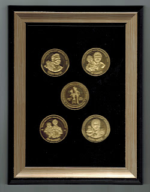

Framed Hall of Fame Coins
10/2/2012
Question: Received the coins and I like them just fine. Will you continue to offer the coin sets framed? Norman
From Mr. D: Yes, I will continue to offer all sets of coins framed. But you need to be aware the the frame styles may vary from set to set. My dealer has a new selection every time I go in to replenish my supply. I will be certain all frames match on any one order, but I cannot match previous frames nor guarantee a match in the future. Note: framed sets will include a fifth coin to display the reverse of the four facial images. (Framed price: add $15 per set.)
I also stock albums for coin display, collecting, and preservation. Photos and details here: www.hofcoins.blogspot.com (The Dansco Album is my choice for my personal collection.)
{kind=link}

* * * * *From Mr. D: Yes, I will continue to offer all sets of coins framed. But you need to be aware the the frame styles may vary from set to set. My dealer has a new selection every time I go in to replenish my supply. I will be certain all frames match on any one order, but I cannot match previous frames nor guarantee a match in the future. Note: framed sets will include a fifth coin to display the reverse of the four facial images. (Framed price: add $15 per set.)
I also stock albums for coin display, collecting, and preservation. Photos and details here: www.hofcoins.blogspot.com (The Dansco Album is my choice for my personal collection.)